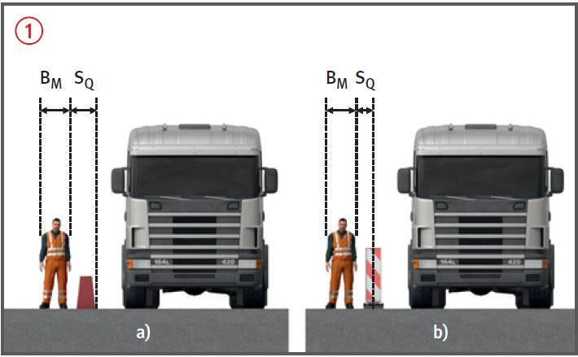
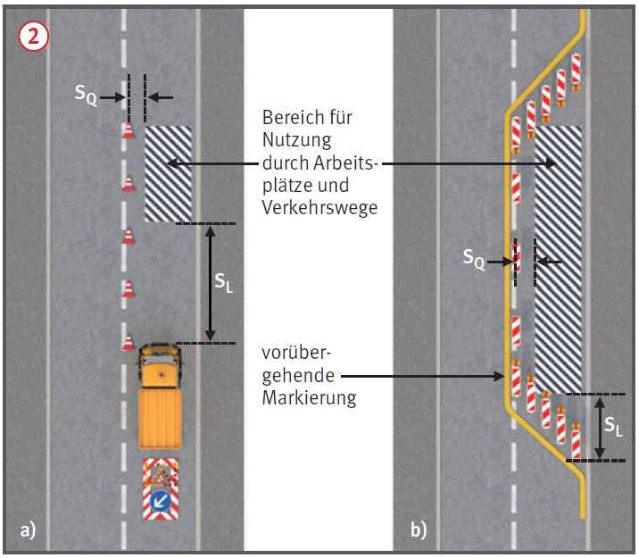

Sicherheitsabstände von Arbeitsplätzen und Verkehrswegen auf Straßenbaustellen zum Verkehr |

| 1 Mindestmaße für seitliche Sicherheitsabstände (SQ) zum fließenden Verkehr bei Straßenbaustellen längerer Dauer (aus ASR A5.2) | ||||||
| Zulässige Höchstgeschwindigkeit | ||||||
| Element | 30 km/h | 40 km/h | 50 km/h | 60 km/h | 80 km/h | 100 km/h |
| Fahrzeug-Rückhaltesysteme | 30 cm | 40 cm | 50 cm | 60 cm | 80 cm | 100 cm |
| Leitbake (1000 mm x 250 mm, 750 mm x 187,5 mm), Leitkegel, Leitwand |
30 cm | 40 cm | 50 cm | 70 cm | 90 cm | |
| Leitbake (500 mm x 125 mm), Leitschwelle, Leitbord |
50 cm | 60 cm | 70 cm | 90 cm | 110 cm | |
1. Bei zulässigen Höchstgeschwindigkeiten ab 100 km/h müssen Fahrzeug-Rückhaltesysteme eingesetzt werden.
2. Die Sicherheitsabstände für Fahrzeug-Rückhaltesysteme berücksichtigen ausschließlich die verkehrsleitende Funktion dieser Systeme.
| 2 Mindestmaße für seitliche Sicherheitsabstände (SQ) zum fließenden Verkehr bei Straßenbaustellen kürzerer Dauer (aus ASR A5.2) | |||||||
| Zulässige Höchstgeschwindigkeit | |||||||
| Element | 30 km/h | 40 km/h | 50 km/h | 60 km/h | 80 km/h | 100 km/h | 120 km/h |
| Leitbake (1000 mm x 250 mm, 750 mm x 187,5 mm), Leitkegel, Leitwand |
30 cm | 40 cm | 50 cm | 70 cm | 90 cm | 110 cm | 130 cm |
| Leitbake (500 mm x 125 mm), Leitschwelle, Leitbord |
50 cm | 60 cm | 70 cm | 90 cm | 110 cm | 130 cm | 150 cm |

| 3 Mindestmaße für Sicherheitsabstände in Längsrichtung (SL)a zum ankommenden Verkehr | |||
| Lage der Straßenbaustelle (Arbeitsstelle) bzw. zulässige Höchstgeschwindigkeit außerhalb des Straßenbaustellenbereichs (Arbeitsstellenbereichs) | |||
| Element | innerörtliche Straßen | Einbahnige Landstraßen und innerörtliche Straßen mit Vzul > 50 km/h | Autobahnen, autobahnähnliche Straßen und zweibahnige Landstraßenb |
| Fahrbare Absperrtafel mit Zugfahrzeug oder Sicherungsfahrzeug ≥ 10 t zulässige Gesamtmasse | 3 m | 10 m | 75 mc |
| Fahrbare Absperrtafel mit Zugfahrzeug oder Sicherungsfahrzeug < 10 t bis ≥ 7,49 t zulässige Gesamtmasse | 5 m | 15 m | 100 mc |
| Fahrbare Absperrtafel mit Zugfahrzeug oder Sicheungsfahrzeug < 7,49 t zulässige Gesamtmasse | 7,5 m | 20 m | nicht zulässig |
| Fahrbare Absperrtafel ohne Zugfahrzeug | 15 m | 40 cm | nicht zulässig |
Hinweis:
Werden auf innerörtlichen Straßen bzw. auf Landstraßen andere Verkehrseinrichtungen (§ 43 StVO) oder bauliche
Leitelemente zur Querabsperrung von Teilen der Fahrbahn eingesetzt, so beträgt SL gegenüber dem ankommenden
Verkehr innerorts 10 m, außerorts entspricht SL der Länge des Verschwenkungsbereichs gemäß RSA.
a Die genannten Sicherheitsabstände (SL) sind im Sinne eines durch einen Anprall aufzehrbaren Bereiches als
lichtes Maß zwischen Vorderkante der Absperrung (Sicherungs- bzw. Zugfahrzeug) und Arbeitsbereich zu
verstehen, d. h. als Nettomaß.
b Auf Rampen (Verbindungsfahrbahnen in Knotenpunkten) können in Abhängigkeit von der Lage der Baustelle in
der Rampe, der Rampenlänge und den tatsächlich gefahrenen Geschwindigkeiten kleinere Abstände in Betracht
kommen, jedoch nicht unter 20 m.
c Bei beweglichen Straßenbaustellen (Arbeitsstellen) kann der Abstand auf 50 m reduziert werden.
07/2021